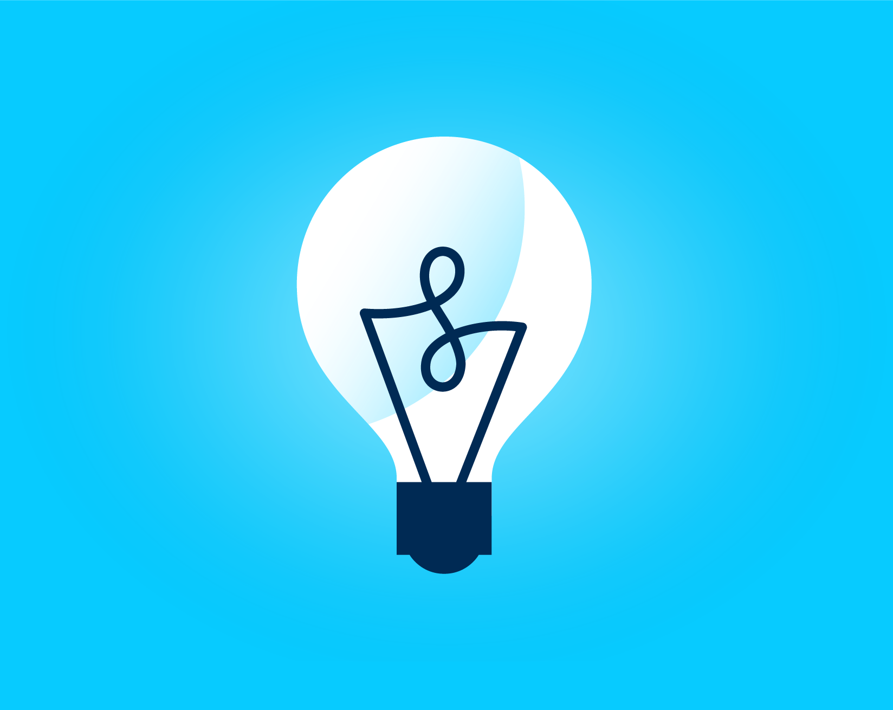

08-27-2020 ~ Girvin Djapardi
Crucial Revision Tips

Now, a lot of you may be wondering, what is the most efficient way to revise your IGCSE subjects. Well, guess what, I am going to give you a detailed insight on things that have worked for me as well as tips based on scientific research.
Before revision, it is absolutely important to understand how to write good notes which I will be also publishing shortly after. Good notes help simplify what is important to your exams and helps you revise effectively.
To me, when I revise, I usually have my notebook open and I will try to solve past paper questions. Instead of directly doing past papers, try finding Question Banks which list questions per topic. This way, you will be able to find out which topics you are stronger in. Topics you are already stronger in will have to require you less time to master.
Now, some of you may ask, why leave the notebook open. If you are already really stuck or forgot some key concepts, it is ABSOLUTELY OKAY to take a peek at your notebook. But I repeat, only do this if you are really stuck or after a minute or 2, you can't seem to remember the definition. I suggest when this happens, instead of directly looking up for the answer, try finding worked examples that link with the question involved.
Having the notebook open is also helpful in a sense where after doing multiple worksheets or papers, you may realize that some topics repeat or the same style of question is being repeated. You may then highlight your notes with respect to these discoveries as well as jot down worked problems you found challenging.
The beauty of doing past papers is just like what has been mentioned above. You get a gist of what is being asked more and hence can focus more on this topics. This is especially true for Economics. Now, based on what 'scientifically works,' I'd suggest giving yourself a reward for every 25 minutes or so of ABSOLUTE FOCUS. This is more commonly known as the Pomodoro timer. To add to that, instead of cramming subjects in a day for several hours, spread it out in order to enhance spaced repetitions. I will also talk more about this in the upcoming blog posts. That's it for now! Bye!